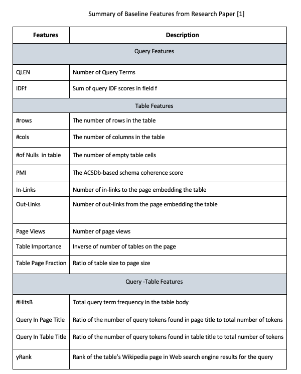
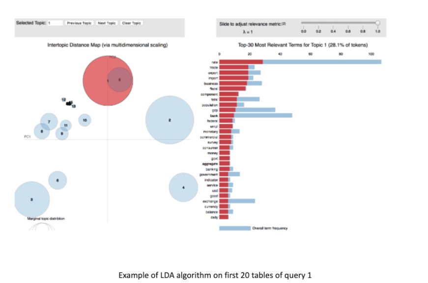
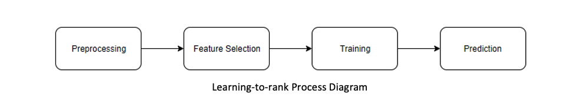
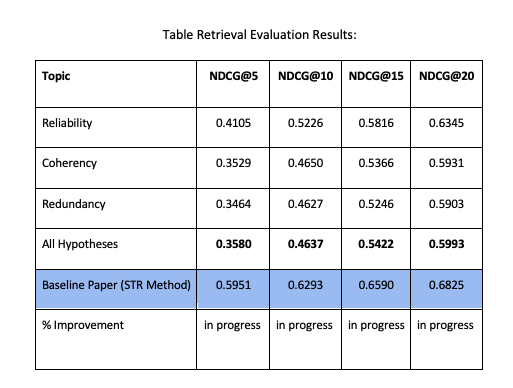
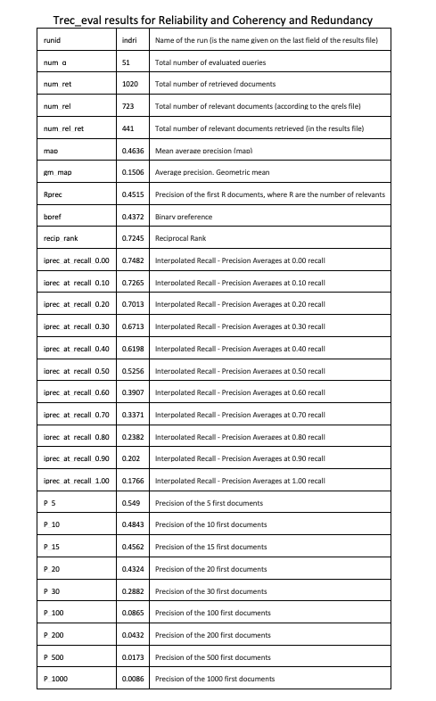

Overview
Ad Hoc Table Retrieval
Search engines are able to retrieve web pages that have the highest information value to the users search queries. However, they are not able to identify and retrieve tabular information that are embedded within unstructured textual content on Web pages. Tables are widely used to store data and they are a structured source of information.
Due to the vast number of tables available on the web, it would be an effective use of information if tables can be effectively retrieved. The goal of this project was to develop cutting-edge techniques that would allow for the efficient identification and retrieval of tables for a given user query. Our mission was to take the baseline ranking and improve it by implementing new features that could contribute to improving the baseline of ad hoc table retrieval.
We initially started our project by studying the work of authors Zhang and Balog[1]. To improve past work, we needed to recreate components of the past work. It was essential to implement all the features from scratch since no source code was given. Features were organized into three sections, query features, table features and query-table features. Thereafter, multiple features were selected from each section, and implemented accordingly. After reproducing the work, three hypotheses were used to implement more features. The three hypotheses include reliability, redundancy and coherency. New features based on these three hypotheses were implemented in an attempt to improve past work.
These feature results were then executed using a ranking algorithm with different metrics. The Random Forests algorithm was used as the ranking algorithm with metrics such as NDCG (Normalized Discounted Cumulative Gain) and ERR (Expected Reciprocal Rank)[2]. In summary, the focus of this project was to add contributions to enhance and further improve the ad hoc retrieval by taking into consideration three different hypotheses of reliability, redundancy and coherency.
Objectives
The main objective of this project was to implement a technique that is capable of efficient table retrieval from a user query. The focus was to study the work of “Ad Hoc Table Retrieval using Semantic Similarity” by authors Shuo Zhang and Krisztian Balog[1]and propose additional improvements.
The work comprised of semantic matching done with three main feature categories, table, query and table-query features. These features are the baseline used to break down the tables and query characteristics. Features were organized into query features, table features and query-table features. Thereafter, multiple features from each section were implemented to reproduce baseline results. The improvements include a set of features that would better match the query to the table ranking.
The goal was to implement a model that would produce better retrieval results based on these new features. The model would be tested for performance using supervised and unsupervised ranking algorithms. To understand the performance of the model, the ranking results would then be compared with the baseline to show how well the model was able to retrieve the table on its own versus with assistance.
Technical Information Summary
Theory and Design
The first step of project implementation procedure was to execute the feature calculations for each of the corresponding hypotheses. These features are added to the existing baseline features belonging to the work of authors Zhang and Balog[1], illustrated below. The software application used to develop the coding implementation of feature measurements is Pycharm. Specifics regarding the Python libraries and tools that were used are discussed with each corresponding hypothesis. 
Table Coherency
To prepare working with LDA algorithm, it was crucial to take the tabular data and convert it to documents. To accomplish this Python data manipulation tools were used. All the elements of the table were used which contained text. Some elements such as number of columns, number of rows, number of numerical rows were disregarded as they were characteristics. Other elements such as title, page title, second title, caption and data were extracted from every table. Once this data was extracted, it was stored in the form of a Python dictionary. However, for the LDA algorithm the data needed to be formatted into strings. For this, the individual strings were extracted and punctuation was removed. The data for every table was saved as a .txt file ready for the LDA algorithm. The data needed to be further processed to remove stop words, stem the words, lowercase the words, and tokenize the words. This would insure that the topics are composed of the important words. To do the above, Python modules such as spacy, pandas, numpy, and nltk were used.
Latent Dirichlet Allocation (LDA) Algorithm
The LDA model is created with the Python module Gensim as it considers numbers as well as text. Once the LDA model is created, it outputs a number of topics with the probabilities of the most used words in it. Below is an example of how the topics are extracted from a set of documents: 
Learn-to-Rank Algorithm
When data is retrieved based off of a query, every document retrieved is ranked from most relevant, to least relevant. The ranking is done with a rank score that is calculated and sorted according to the score. Machine learning algorithms are used in which models learn to compute the ranking score. The process of learning-to-rank is summarized in the following pipe-line diagram, presented below. Firstly, preprocessing occurs, this step is dependent on the algorithm being used. Certain algorithms require preprocessing to transform data into a specific format for optimization of computation. The next step is Feature Selection, where features are to be selected to build the learning model. Once this is completed, the prepared data enters the training stage, where the chosen learning-to-rank algorithm processes and learns the input data to create a model. The resulting model is used in the final stage of the process to generate predictions. In the Prediction stage, the model is used to form an estimation of relevance.
Random Forests Algorithm
The Random Forest algorithm is an ensemble classifier algorithm based on the decision tree model. It generates k different training data subsets from an original dataset using a bootstrap sampling approach, and then, k decision trees are built by training these subsets. A random forest is finally constructed from these decision trees. Each sample of the testing dataset is predicted by all decision trees, and the final classification result is returned depending on the votes of these trees.
Table Title, Table Data and Page Title Redundancy
The table redundancy hypothesis focused on detecting redundancy amongst tables which would lead to better re-ranking of the tables for a given query. Data redundancy is created within a database or data storage technology in which the same piece of data is held in two separate places. This could occur by accident but is also done deliberately for backup and recovery purposes. When applying this concept to our tables there were many instances when data fields within the table were repeating. The repeating fields that were used to calculate redundancy in the table include table “title” , “data” and “page title”. These fields were used to generate a redundancy ratio for the 1200 tables in our corpus file.
Results
The measurement results that tested the effectiveness of our hypothesized features with regards to relevance ranking is demonstrated below.  Each hypothesis was evaluated individually with the same methodology and procedure described above in the previous section of the report. This allowed for a more detailed assessment of how effective each feature was towards contributing to the improvement of the baseline results. 
Post Analysis
Once the results were generated, they were analyzed to further understand the effects of our features. To accomplish this, we as a group collectively decided to run all three hypotheses individually and then a final evaluation with all of them combined together. This assisted with providing more insight towards the level of impact each hypothesis had on the improvements of the baseline performance.After analyzing the results produced, it shows that there is a discrepancy in the pipeline to produce the equivalent or improved results.
One explanation for having performance values lower than the baseline, is that the results were not evaluated in the same manner. The understanding is that if our features do not perform well, the ranking algorithm should disregard the new features, and produce the same baseline features. Specifically, the RankLib command used to generate the model may be different from what the baseline paper used, or there may be an issue with the computed values of our newly added features, possibly causing a disruption to the learn-to-rank model.
Another explanation for the results produced is that we have only trained our models with 1200 tables, and not the entire corpus due to having a lack of computing power. This may have an effect as the model, since it was not trained on the complete corpus of 1.6 M tables. In addition, investing in a more detailed assessment of the baseline equivalence to ensure that the results are properly reflected on the work done, and re-analysis of the baseline process would be effective towards identifying the possible issue. Thus, it is difficult to conclude whether our hypotheses have the capability to improve the baseline relevance ranking performance, due to testing with a reduced corpus.